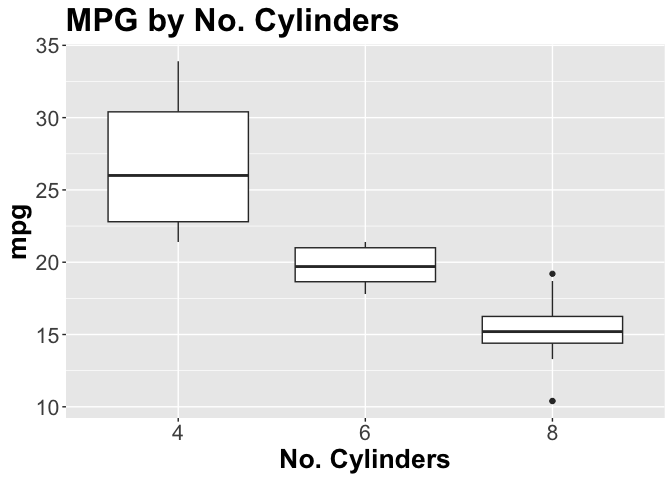

The goal of grp1ProjectPackage is to provide user a package for simplifying data pre-processing and doing basic exploratory data analyses. It includes functions for loading data from an html, removing certain columns from a data set, creating boxplots, and splitting data into training and testing sets.
Installation
You can install the development version of grp1ProjectPackage from GitHub with:
# install.packages("devtools")
devtools::install_github("DSCI-310/dsci-310-group-01-pkg")Example
This is a basic example which shows you how to solve a common problem:
library(grp1ProjectPackage)
## basic example code- Load data from a URL using
load_data()
data<-load_data("https://7e6cd356-86ad-4874-abc7-3a69bbbc39e6.filesusr.com/ugd/c5a545_c1b17c070c984dfcb14cf1c3bb0b6e67.csv?dn=garments_worker_productivity.csv")
head(data)
#> # A tibble: 6 × 15
#> date quarter depar…¹ day team targe…² smv wip over_…³ incen…⁴ idle_…⁵
#> <chr> <chr> <chr> <chr> <dbl> <dbl> <dbl> <dbl> <dbl> <dbl> <dbl>
#> 1 1/1/2… Quarte… sweing Thur… 8 0.8 26.2 1108 7080 98 0
#> 2 1/1/2… Quarte… finish… Thur… 1 0.75 3.94 NA 960 0 0
#> 3 1/1/2… Quarte… sweing Thur… 11 0.8 11.4 968 3660 50 0
#> 4 1/1/2… Quarte… sweing Thur… 12 0.8 11.4 968 3660 50 0
#> 5 1/1/2… Quarte… sweing Thur… 6 0.8 25.9 1170 1920 50 0
#> 6 1/1/2… Quarte… sweing Thur… 7 0.8 25.9 984 6720 38 0
#> # … with 4 more variables: idle_men <dbl>, no_of_style_change <dbl>,
#> # no_of_workers <dbl>, actual_productivity <dbl>, and abbreviated variable
#> # names ¹department, ²targeted_productivity, ³over_time, ⁴incentive,
#> # ⁵idle_time- Dropping columns with
clean_data()
For the purpose of demonstration for the rest of the package, we will use a basic data set called mtcars.
head(mtcars)
#> mpg cyl disp hp drat wt qsec vs am gear carb
#> Mazda RX4 21.0 6 160 110 3.90 2.620 16.46 0 1 4 4
#> Mazda RX4 Wag 21.0 6 160 110 3.90 2.875 17.02 0 1 4 4
#> Datsun 710 22.8 4 108 93 3.85 2.320 18.61 1 1 4 1
#> Hornet 4 Drive 21.4 6 258 110 3.08 3.215 19.44 1 0 3 1
#> Hornet Sportabout 18.7 8 360 175 3.15 3.440 17.02 0 0 3 2
#> Valiant 18.1 6 225 105 2.76 3.460 20.22 1 0 3 1Dropping a column named mpg from mtcars.
head(clean_data(mtcars, "mpg"))
#> cyl disp hp drat wt qsec vs am gear carb
#> Mazda RX4 6 160 110 3.90 2.620 16.46 0 1 4 4
#> Mazda RX4 Wag 6 160 110 3.90 2.875 17.02 0 1 4 4
#> Datsun 710 4 108 93 3.85 2.320 18.61 1 1 4 1
#> Hornet 4 Drive 6 258 110 3.08 3.215 19.44 1 0 3 1
#> Hornet Sportabout 8 360 175 3.15 3.440 17.02 0 0 3 2
#> Valiant 6 225 105 2.76 3.460 20.22 1 0 3 1As you can see above, the column mpg has been dropped from the data frame.
- Creating a boxplot using
create_boxplot()
create_boxplot(mtcars, as.factor(mtcars$cyl), mtcars$mpg, "MPG by No. Cylinders", "No. Cylinders", "mpg")
- Splitting data into training and testing sets using
train_test_split()
train_test_split(mtcars, 0.75, "mpg")
#> [[1]]
#> mpg cyl disp hp drat wt qsec vs am gear carb
#> Merc 450SLC 15.2 8 275.8 180 3.07 3.780 18.00 0 0 3 3
#> Mazda RX4 Wag 21.0 6 160.0 110 3.90 2.875 17.02 0 1 4 4
#> Volvo 142E 21.4 4 121.0 109 4.11 2.780 18.60 1 1 4 2
#> Valiant 18.1 6 225.0 105 2.76 3.460 20.22 1 0 3 1
#> Cadillac Fleetwood 10.4 8 472.0 205 2.93 5.250 17.98 0 0 3 4
#> Merc 280 19.2 6 167.6 123 3.92 3.440 18.30 1 0 4 4
#> Lotus Europa 30.4 4 95.1 113 3.77 1.513 16.90 1 1 5 2
#> Hornet Sportabout 18.7 8 360.0 175 3.15 3.440 17.02 0 0 3 2
#> Mazda RX4 21.0 6 160.0 110 3.90 2.620 16.46 0 1 4 4
#> Duster 360 14.3 8 360.0 245 3.21 3.570 15.84 0 0 3 4
#> Fiat 128 32.4 4 78.7 66 4.08 2.200 19.47 1 1 4 1
#> Chrysler Imperial 14.7 8 440.0 230 3.23 5.345 17.42 0 0 3 4
#> Pontiac Firebird 19.2 8 400.0 175 3.08 3.845 17.05 0 0 3 2
#> Merc 280C 17.8 6 167.6 123 3.92 3.440 18.90 1 0 4 4
#> Toyota Corona 21.5 4 120.1 97 3.70 2.465 20.01 1 0 3 1
#> Hornet 4 Drive 21.4 6 258.0 110 3.08 3.215 19.44 1 0 3 1
#> Merc 450SE 16.4 8 275.8 180 3.07 4.070 17.40 0 0 3 3
#> Toyota Corolla 33.9 4 71.1 65 4.22 1.835 19.90 1 1 4 1
#> Ford Pantera L 15.8 8 351.0 264 4.22 3.170 14.50 0 1 5 4
#> Merc 230 22.8 4 140.8 95 3.92 3.150 22.90 1 0 4 2
#> Dodge Challenger 15.5 8 318.0 150 2.76 3.520 16.87 0 0 3 2
#> Porsche 914-2 26.0 4 120.3 91 4.43 2.140 16.70 0 1 5 2
#> Merc 240D 24.4 4 146.7 62 3.69 3.190 20.00 1 0 4 2
#> Fiat X1-9 27.3 4 79.0 66 4.08 1.935 18.90 1 1 4 1
#>
#> [[2]]
#> mpg cyl disp hp drat wt qsec vs am gear carb
#> Merc 450SL 17.3 8 275.8 180 3.07 3.73 17.60 0 0 3 3
#> Camaro Z28 13.3 8 350.0 245 3.73 3.84 15.41 0 0 3 4
#> Ferrari Dino 19.7 6 145.0 175 3.62 2.77 15.50 0 1 5 6
#> Maserati Bora 15.0 8 301.0 335 3.54 3.57 14.60 0 1 5 8Contributing
We appreciate contributions to the grp1ProjectPackage package. Please refer to our Contributing document and Code of Conduct for more information.
License
This project, developed by Justin Wong, Longfei Guan, and Anirudh Duggal, is licensed under the terms of the MIT license.
Permission is hereby granted, free of charge, to any person obtaining a copy of this software and associated documentation files (the “Software”), to deal in the Software without restriction, including without limitation the rights to use, copy, modify, merge, publish, distribute, sublicense, and/or sell copies of the Software, and to permit persons to whom the Software is furnished to do so, subject to the following conditions:
The above copyright notice and this permission notice shall be included in all copies or substantial portions of the Software.
THE SOFTWARE IS PROVIDED “AS IS”, WITHOUT WARRANTY OF ANY KIND, EXPRESS OR IMPLIED, INCLUDING BUT NOT LIMITED TO THE WARRANTIES OF MERCHANTABILITY, FITNESS FOR A PARTICULAR PURPOSE AND NONINFRINGEMENT. IN NO EVENT SHALL THE AUTHORS OR COPYRIGHT HOLDERS BE LIABLE FOR ANY CLAIM, DAMAGES OR OTHER LIABILITY, WHETHER IN AN ACTION OF CONTRACT, TORT OR OTHERWISE, ARISING FROM, OUT OF OR IN CONNECTION WITH THE SOFTWARE OR THE USE OR OTHER DEALINGS IN THE SOFTWARE.